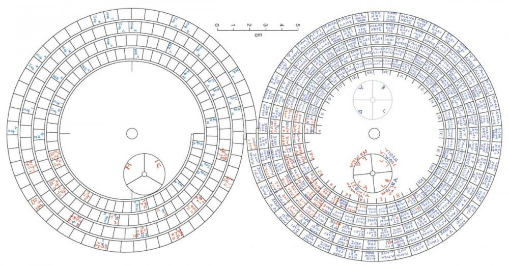

{kind=link}
Contact:
Dr. Matteo Valleriani
Max Planck Institute for the History of Science
Boltzmannstr. 22
14195
Berlin
Germany
Content Research:
Regina Servos
In what is known as the Saros Cycle, the Babylonians observed that every 223 lunar months (6,5851/3 days or just over 18 years), solar and lunar eclipses repeat with similar characteristics. The Saros Dial, the lower back dial of the Antikythera, is correspondingly divided into 223 sections, one for each lunar month. Some of its monthly sections show inscriptions predicting eclipses. These also give details of whether the eclipse will be lunar or solar, whether it will take place in the daytime or at night, and also the hour at which it will appear. Because the Saros period is not equal to a whole number of days, this means that the repeat eclipse shifts approximately 8 hours in time and 120° in longitude.Ancient astronomers identified a triple Saros Cycle of 669 lunar months, which is equal to a whole number of days. This they called the Exeligmos Cycle. A subsidiary dial on the Antikythera, divided into three sections, corresponds to this cycle. It functions to adjust the eclipse time predicted on the inscriptions on the Saros Dial by 8 hours for each successive Saros period. The Saros Cycle was originally named the “Periodic Cycle” by Ptolemy, but was renamed in 1691 by the English astronomer, Edmond Halley, based on a misinterpretation of a Babylonian word. The misnomer has stuck.
A lunar month is the time the Moon takes to pass through a complete cycle of its phases. A problem arises for calendar-makers since a year does not correspond to a whole number of lunar months. The Metonic Cycle—named after the Athenian astronomer, Meton of Athens—addresses this problem by using the close proximity of 235 lunar months to 19 years. Meton introduced a calendar based on this 19-year cycle, starting at the Spring Equinox in 432 BC. Even today, the variable date of Easter, which depends on the phases of the Moon, is still calculated using the Metonic Cycle.The upper back dial (see below) of the Antikythera Mechanism is a 19-year calendar, based on the Metonic cycle, arranged as a five-turn spiral. Though no month names on the Metonic calendar were previously known, all 12 months have now been identified and belong to the Dorian family of calendars. A practically complete match of the names of the months could be identified with those used in Illyria and Epirus (northwestern Greece) and Corcyra (Corfu)—all of which were Corinthian colonies.
About a century after Meton, the Ionian astronomer Callippos improved the Metonic Cycle by observing that four Metonic periods (4 x 19 = 76 years) minus one day gives an even better approximation of the lunar month.
The upper subsidiary dial of the Antikythera Mechanism is not a 76-year Callippic dial as previously thought, but follows the four-year cycle of the Olympiad and its associated Panhellenic Games, which were a central part of ancient Greek culture and a common basis for chronology.

(Picture taken from http://www.nature.com/nature/journal/v454/n7204/fig_tab/nature07130_F3.html)

(Picture taken from: http://www.nature.com/nature/journal/v454/n7204/images/nature07130-f2.0.jpg)